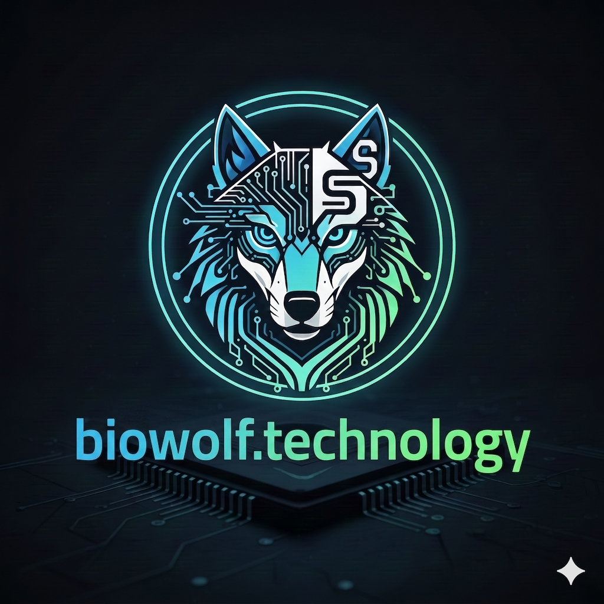

Эффективная разработка современных цифровых решений, скриптов автоматизации процессов и производительных Telegram-ботов.
Изучить возможностиДобро пожаловать! Я занимаюсь проектированием и написанием чистого, отказоустойчивого кода для решения прикладных задач. Моя специализация — создание умных скриптов автоматизации, которые берут на себя рутинную работу, и разработка интерактивных Telegram-ботов любой сложности. В работе я делаю упор на современные технологии и архитектурные подходы, обеспечивающие стабильность и высокую скорость выполнения программ.
Проектирование логики приложений, создание скриптов автоматизации и удобных Telegram-интерфейсов. Нажмите для подробностей.
Оптимизация программ с использованием асинхронного подхода на Python и JavaScript для мгновенного отклика. Нажмите для подробностей.